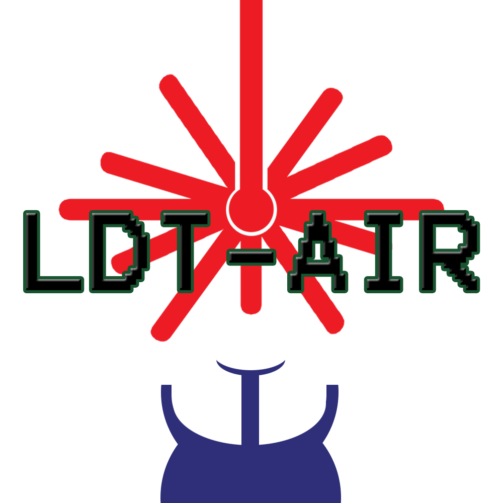

The LDT-AIR project employs free space communication techniques to produce a product sthat can transmit information safely and securely.
Each subsystem of the project was designed, tested and implemented to produce one final product. Optimization of this communication technique
will lead to auspicious means to transmit information.
Since the dawn of the digital age the demand to move large amounts of information as fast as possible has been unquestionable.
The LDT-AIR project members have decided to continue the advancement in the movement of information by exploring the fundamentals
of free space communication. The inherent restrictions of free space optical communications are scattering and environmental factors.
ue to these restrictions the LDT-AIR project set precedence on bit error, range, and resistance to environmental factors while a secure
communication transmission. Some secondary priorities are consumer cost, and portability to ensure the LDT-AIR remains as competitive as
possible with industry demand.
As technology continues to advance the demand for hardware and technologies that support higher bandwidths is at an all-time high.
The US Federal Communications Commission has stated that Wi-Fi, which utilizes radio frequencies, is close to maximum bandwidth usage.
By using optical frequencies much more data can be transmitted. With this in mind, the Light Data Transfer (LDT) Project was designed.
Inspiration for this project came from the emerging market of Li-Fi communication, as well as NASA's LLCD, and OPALS projects.
The LDT Project will take a modulated digital signal, via laser, through a lens system to a sensor. The digital signal will then be demodulated
and displayed on an output screen. For the demonstration the laser will have a wavelength of 650 nm to avoid eye injuries and attempts in the near
infrared spectral region, 700 nm - 1400 nm, will be used to achieve bit rate speeds of at least 1Mbps download speeds. The distance between laser
setups will be 10 feet and we will push the distance farther as we achieve our data speed. The LDT Project can be another means of providing users with a
more secure and reliable option of sending and receiving information. With this technology exploited the future of bandwidth demanding applications will
continue to provide users with their services around the world, and beyond.